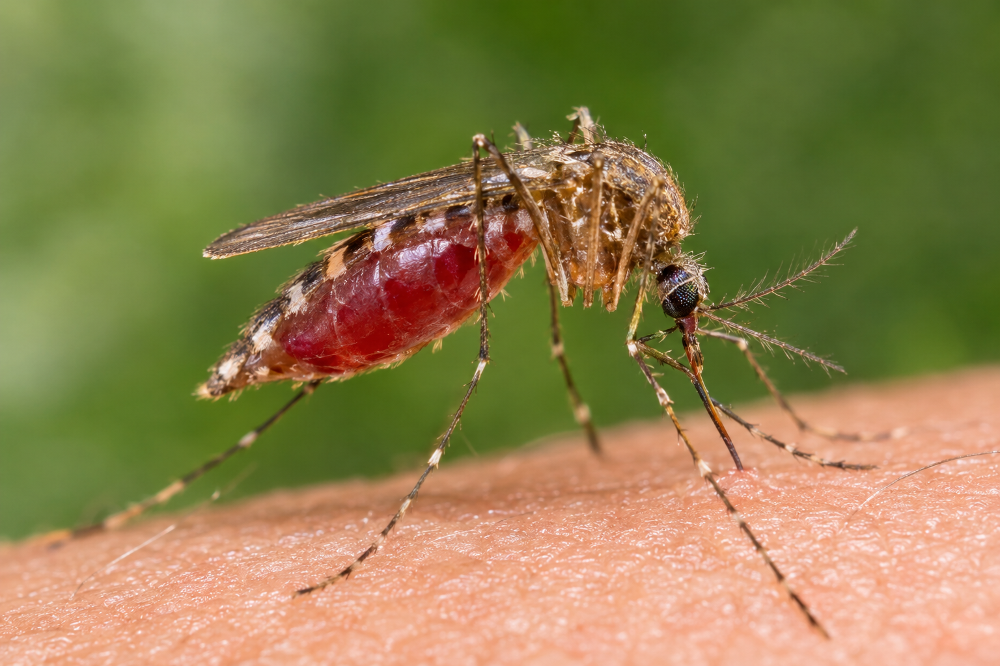

Malaria: Symptoms, Prevention and When to Seek Treatment
Health | By Vivitek

A mosquito feeding on human skin. Malaria is transmitted by infected female Anopheles mosquitoes.
Malaria is a serious disease caused by Plasmodium parasites. It is usually transmitted to people through the bites of infected female Anopheles mosquitoes. Malaria can be life-threatening, but early diagnosis and appropriate treatment can save lives.
What are the common symptoms of malaria?
Symptoms may include:
- Fever
- Headache
- Chills and sweating
- Tiredness and weakness
- Muscle aches
- Nausea or vomiting
These symptoms can resemble other illnesses, so symptoms alone cannot confirm malaria. A health worker can arrange a malaria rapid diagnostic test or blood test.
How can you prevent malaria?
- Sleep under an insecticide-treated mosquito net. Use a recommended treated net correctly every night.
- Reduce mosquito breeding sites where practical. Empty standing water around the home and keep water containers covered.
- Use appropriate mosquito protection. Follow instructions for recommended repellents, screens, and other protective measures.
- Follow local health advice. Pregnant women, young children, and others at increased risk should ask a qualified health worker about recommended prevention measures.
How is malaria treated?
Malaria requires prompt diagnosis and treatment with medicines recommended by a qualified health professional. The appropriate treatment depends on factors such as the parasite species, severity of illness, pregnancy status, and local treatment guidelines.
Do not take leftover medicines or rely on herbal remedies instead of medical care. If you have a fever and suspect malaria, seek testing promptly.
When is malaria an emergency?
Seek emergency medical care immediately if someone with suspected malaria has confusion, difficulty waking, seizures, difficulty breathing, extreme weakness, repeated vomiting or inability to drink, collapse, or loss of consciousness.
Children and pregnant women with suspected malaria need prompt medical assessment.
Final message
Malaria can be prevented and treated, but delays can be dangerous. Use a mosquito net, seek testing when symptoms develop, and follow the advice of a qualified health professional.
Health reminder: This article provides general educational information and does not replace professional medical assessment.